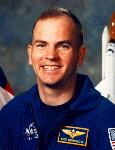

Lyndon B. Johnson Space Center
Houston, Texas 77058
|
National Aeronautics and Space Administration Lyndon B. Johnson Space Center Houston, Texas 77058 |
 |
Biographical Data |
||
FREDERICK W. RICK STURCKOW (COLONEL, USMC, RET.)
NASA ASTRONAUT (FORMER)
PERSONAL DATA: Born August 11, 1961, and raised on a farm near Lakeside, California. Married to the former Michele A. Street of Great Mills, Maryland. He enjoys flying and physical training (PT). His father, Karl H. Sturckow, resides in Lakeside; his mother, Janette R. Sturckow, resides in La Mesa, California.
EDUCATION: Graduated from Grossmont High School, La Mesa, California, in 1978. Bachelor of Science degree in Mechanical Engineering from California Polytechnic State University, 1984. Master of Science degree in Mechanical Engineering, 2000.
SPECIAL HONORS: Defense Superior Service Medal, Legion of Merit (2), Distinguished Flying Cross (2), Defense Meritorious Service Medal, Single Mission Air Medal with Combat "V", Strike/Flight Air Medal (4), Navy and Marine Corps Commendation Medal, Navy and Marine Corps Achievement Medal, NASA Space Flight Medal (4), NASA Exceptional Service Medal, NASA Outstanding Leadership Medal (3), NASA Distinguished Service Medal.
EXPERIENCE: Sturckow graduated high school at age 16 and worked for two years as a truck mechanic at Earley IH Truck Center, serving with the Goodyear Baja pit crew on weekends. During college at Cal Poly, he was leader of the SAE off-road truck project and built his own stock car. Sturckow drove in more than 60 professional Baja and circle-track races. He then joined the Marines and was commissioned in December 1984. An Honor Graduate of The Basic School, he earned his wings in April 1987. Following initial F/A-18 training at VFA-125, he reported to VMFA-333, the Marine Corps Air Station Beaufort, South Carolina. While assigned to VMFA-333, he made an overseas deployment to Japan, Korea, and the Philippines and was then selected to attend the Navy Fighter Weapons School (TOPGUN) in March, 1990. In August 1990, he deployed to Sheik Isa Air Base, Bahrain, for a period of eight months. Sturckow flew a total of 41 combat missions during Operation Desert Storm and led 30 plane airstrikes into Iraq and Kuwait. In January 1992 he attended the United States Air Force Test Pilot School at Edwards Air Force Base, California. In 1993 he reported to the Naval Air Warfare Center - Aircraft Division, Patuxent River, Maryland, for duty as the F/A-18 E/F Project Pilot. Sturckow also flew a wide variety of projects and classified programs as an F/A-18 test pilot in the areas of weapons separation, carrier suitability, flutter, loads, electronic systems, flying qualities and performance.
He has logged more than 6,500 flight hours and has flown over 60 different aircraft.
NASA EXPERIENCE: Selected by NASA in December 1994, Sturckow reported to the Johnson Space Center (JSC) in March 1995. He completed a year of training and evaluation and was initially assigned to work technical issues for the Vehicle Systems and Operations Branch of the Astronaut Office. Since then, he has served as Deputy for the Shuttle Operations Branch of the Astronaut Office, Lead for Kennedy Space Center (KSC) Operations Support, Chief of the Astronaut Office Capsule Communicator (CAPCOM) Branch, and Chief of the Astronaut Office International Space Station Branch. A veteran of four space flights, Sturckow has logged more than 1,200 hours in space. He served as pilot on STS-88 (1998, the first International Space Station assembly mission) and on STS-105 (2001). He was the Crew Commander on STS-117 (2007) and STS-128 (2009). Colonel Sturckow retired from the United States Marine Corps while aboard the International Space Station in September, 2009, after 25 years of active duty service. Sturckow then served as Deputy Chief of the Astronaut Office for the final shuttle missions, flying weather reconnaissance in the T-38 and Shuttle Training Aircraft for launch and landing. Following the tragic Tucson shooting event in January of 2011, he was assigned as the Backup Commander for STS-134. He later served in the International Space Station Operations Branch and as a CAPCOM in the Mission Control Center. In March 2013, Sturckow left NASA to pursue other interests.
SPACE FLIGHT EXPERIENCE: STS-88 Endeavour (December 4 through December 15, 1998) was the first International Space Station assembly mission. During the 12-day mission, U.S.-built node, Unity, was mated with Zarya, the Russian built Functional Cargo Block (FGB). Two crew members performed three spacewalks to connect umbilicals and attach tools/hardware in the assembly and outfitting of the station. Additionally, the crew performed the initial activation and first ingress of the space station, preparing it for future assembly missions and full-time occupation. The crew also performed IMAX Cargo Bay Camera (ICBC) operations and deployed two satellites: Mighty Sat 1, built by the United States Air Force Phillips Laboratory, and SAC-A, the first successful launch of an Argentine satellite. The mission was accomplished in 185 orbits of the Earth in 283 hours and 18 minutes.
STS-105 Discovery (August 10 through August 22, 2001) was the 11th mission to the International Space Station. While at the orbital outpost, the STS-105 crew delivered the Expedition 3 crew, attached the Leonardo Multi-Purpose Logistics Module and transferred more than 2.7 metric tons of supplies and equipment to the station. During the mission, two spacewalks were performed by two crew members. They also brought home the Expedition 2 crew. The STS-105 mission was accomplished in 186 orbits of the Earth, traveling over 4.9 million miles in 285 hours and 13 minutes.
STS-117 Atlantis (June 8 through June 22, 2007) was the 118th shuttle mission and the 21st mission to visit the International Space Station. The successful construction and repair mission involved multiple EVAs by four astronauts to install the S3/4 truss segment, the heaviest element ever delivered by the shuttle to the station. The mission also delivered and returned with an Expedition crew member. STS-117 returned to land at Edwards Air Force Base, California, having traveled 5.8 million miles in 14 days.
STS-128 Discovery (August 28 through September 11, 2009) was the 128th shuttle mission and the 30th mission to the International Space Station, performing the only shuttle docking with the vernier attitude control jets failed. The crew delivered 18,500 pounds of hardware and performed three spacewalks. STS-128 performed the final shuttle landing at Edwards Air Force Base, California, having traveled 5.7 million miles in 14 days.
April 2013